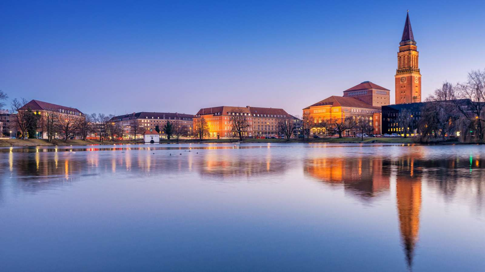
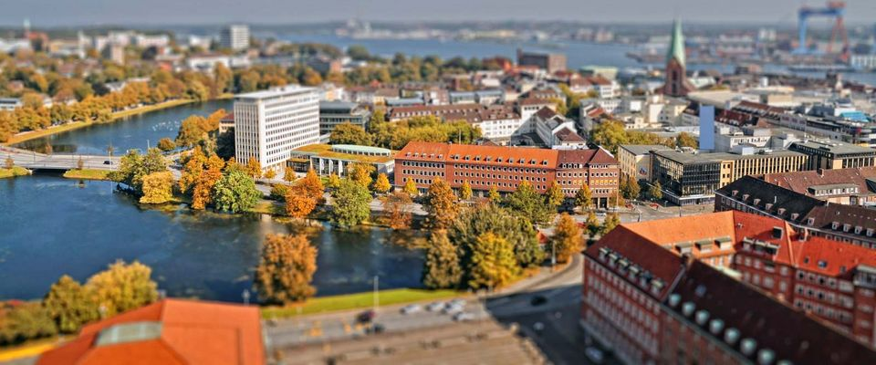
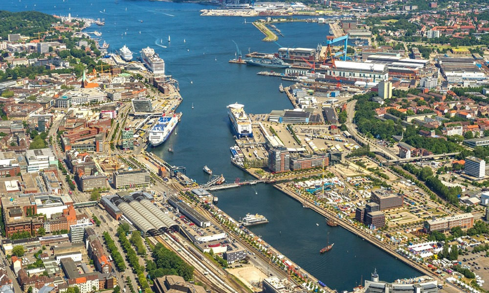
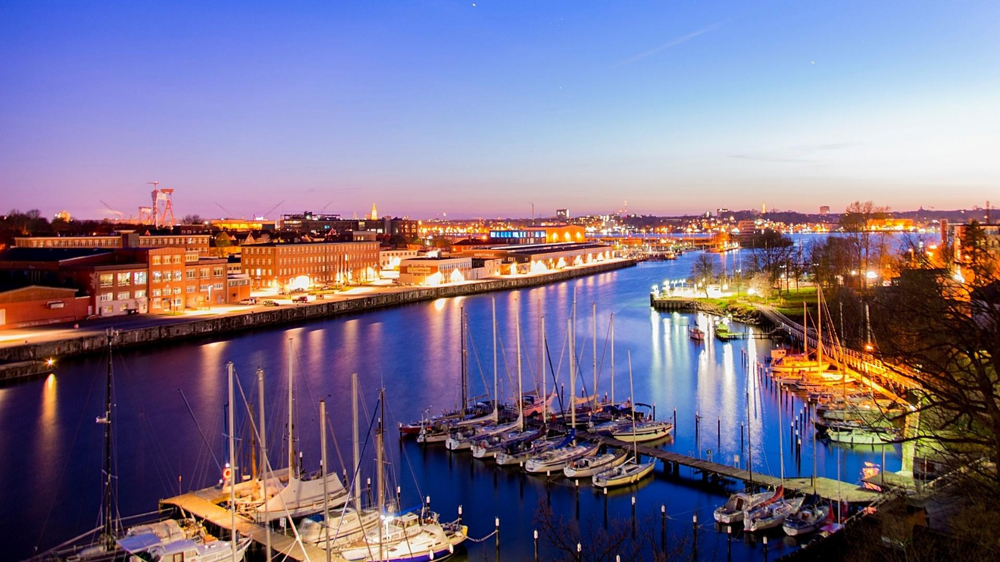
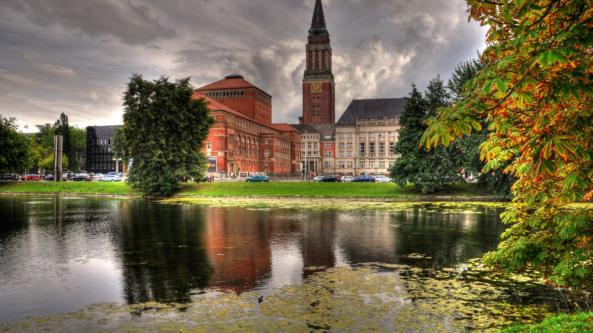

<div class="d-flex">
    <div class="kiel-nav">
        <mat-tab-group backgroundColor="primary">
            <mat-tab class="kiel-nav-item">
                <ng-template mat-tab-label>
                    <strong>Home</strong>
                    <mat-icon>
                        home
                    </mat-icon>
                </ng-template>
                <div id="carouselExampleInterval" class="carousel slide" data-ride="carousel">
                    <div class="carousel-inner">
                        <div class="carousel-item active" data-interval="1000">
                            
                        </div>
                        <div class="carousel-item" data-interval="2000">
                            
                        </div>
                        <div class="carousel-item " data-interval="1000">
                            
                        </div>
                        <div class="carousel-item" data-interval="1000">
                            
                        </div>
                        <div class="carousel-item" data-interval="1000">
                            
                        </div>
                    </div>
                    <a class="carousel-control-prev" href="#" role="button" data-slide="prev">
                        <span class="carousel-control-prev-icon" aria-hidden="true"></span>
                        <span class="sr-only">Previous</span>
                    </a>
                    <a class="carousel-control-next" href="#" role="button" data-slide="next">
                        <span class="carousel-control-next-icon" aria-hidden="true"></span>
                        <span class="sr-only">Next</span>
                    </a>
                </div>
            </mat-tab>
            <mat-tab class="kiel-nav-item">
                <ng-template mat-tab-label>
                    <strong (click)="toggleSidenav.emit()">Experience Kiel</strong>
                    <mat-icon (click)="toggleSidenav.emit()">
                        menu
                    </mat-icon>
                </ng-template>
            </mat-tab>
            <mat-tab class="kiel-nav-item">
                <ng-template mat-tab-label>
                    <strong>About us</strong>
                    <mat-icon>
                        info
                    </mat-icon>
                </ng-template>
                <div class="about-us">
                    <mat-card class="example-card">
                        <mat-card-header>
                            <div mat-card-avatar class="example-header-image"></div>
                            <mat-card-title>Team Name</mat-card-title>
                            <mat-card-subtitle>Kiel Tourism</mat-card-subtitle>
                        </mat-card-header>
                        <mat-card-content class="content">
                            Kiel is the capital and most populous city in the northern German state of
                            Schleswig-Holstein, with a population of 249,023. The oldest building in the city is the
                            13th century Church of St. Nicholas, which has a sculpture by Ernst Barlach in front of it
                            called Geistkämpfer. This place is full of tourist attractions with great natural
                            beauty like beaches, canals, zoo, museums, etc. A huge number of tourists visit Kiel to
                            experience the beauty of these sights.
                            <br/>
                            <br/>
                            We, the group of three students at CAU, Kiel making an attempt which can ease the trip of
                            tourists by providing information about important places at the single platform.
                            <br/>
                            <br/>
                            To fulfill our goal we are providing images of various places and information about these
                            sights. We also try to provide information about different activities that tourists can do
                            in Kiel. As per the feedback from users, we will always try to improve ourselves and provide
                            with most authentic and genuine information.
                        </mat-card-content>
                    </mat-card>
                </div>
            </mat-tab>
        </mat-tab-group>
    </div>
</div>


